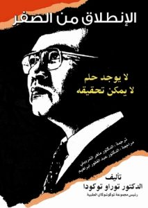

الإنطللق من الصفر

يتناول هذا الكتاب قصة رجل ولد فقيرًا في جزيرة توكونوشيما أصغر جزر اليابان الجنوبية وأكثرها تحديًا وكفاح، عمل وناضل وتحدى ورهن حياته ليحقق حلمه في بناء اكبر مجموعة طبية في العالم مبتدأ من الصفر، لقد صمم وهو في سنته العاشرة أن يكون طبيبًا عندما واجه حادث وفاة أخيه الصغير ذو الثلاث سنوات بسبب عدم قدرة عائلته على إنقاذ حياته لمرضه في إحدى الليالي ورفض الأطباء علاجه لانتهاء وقت عملهم أو طلب أجور مرتفعة. وهب حياته ورهنها من أجل الحصول على قرض لبناء مشفاه الأول والذي حقق حلمه ونجاحه الباهر ليتوسع إلى 270 مستشفى في عموم اليابان وواحدة في بلغاريا من ألف سرير ضمن مجموعة فاعلة ونشطة أسسها وهي مجموعة توكوشوكاي الطبية اليابانية الخاصة. إن سر نجاحه هو بفلسفته التي مفادها "لقد خلق جميع البشر متساوون" ويحق لهم الحصول على العلاج في كل الأوقات وأينما كانوا وبنفس المستوى من العناية الطبية الفائقة. ووفق ذلك فإن مستشفيات مجموعة توكوشوكاي تعمل أربعة وعشرون ساعة يوميًا وطيلة أيام السنة، وترعى الفقراء والأقل دخلاً وبأحدث التقنيات الطبية الحديثة. في هذا الكتاب يتحدث الدكتور توراو توكودا عن تجربته الغنية بالعبر والتي يستفيد منها كل الشباب المتطلع نحو مستقبل زاهر وخدمة شعوبهم ودولهم والإنسانية جمعاء.